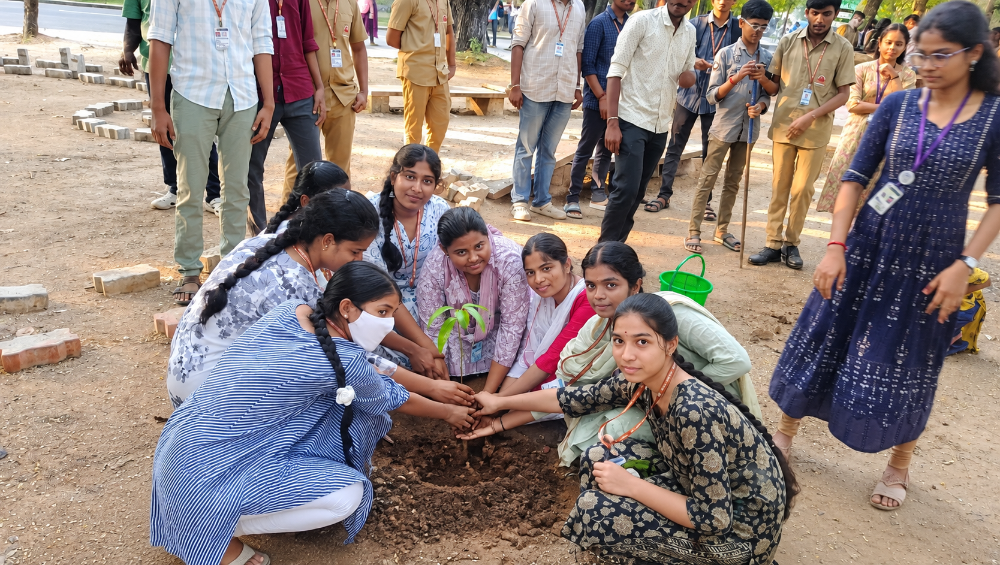
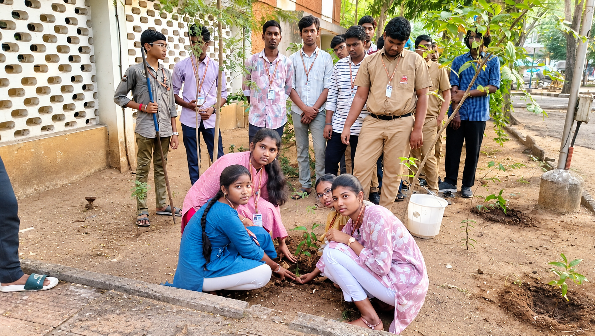
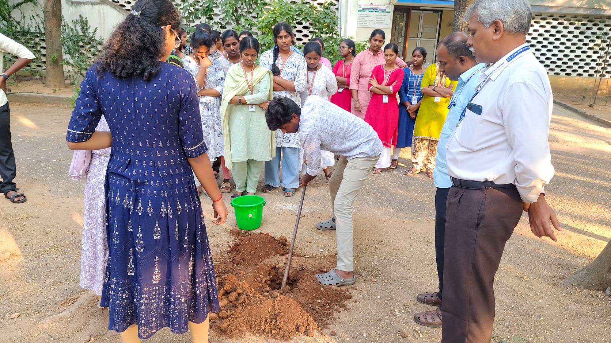
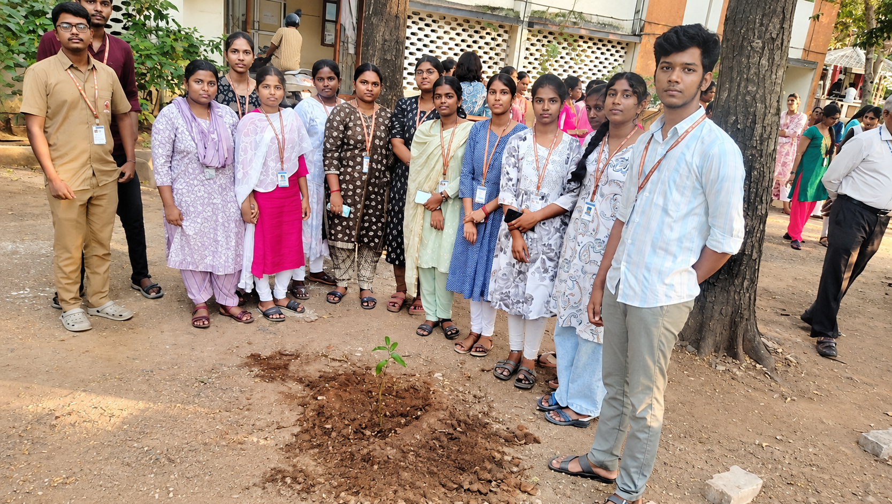

Plantation Drives
Creating greener spaces through tree planting and campus plantation activities led by student volunteers.
YOUTH RED CROSS - MIT
Inspiring students to protect nature, promote sustainability, and create a cleaner and greener campus through collective action.
The Green Team of Youth Red Cross (YRC), MIT is dedicated to promoting environmental awareness and responsible practices among students and the campus community.
Through plantation drives, cleanliness campaigns, environmental awareness programmes, and sustainable initiatives, the team encourages students to take meaningful action for nature.
The team works together to create a cleaner, greener, and more sustainable campus while inspiring everyone to become responsible environmental citizens.

Turning environmental awareness into meaningful action through student-led initiatives and collective effort.
Creating greener spaces through tree planting and campus plantation activities led by student volunteers.
Promoting campus cleanliness, sustainable habits, and responsible use of environmental resources.
Inspiring students and the community to understand environmental issues and make greener choices.
Every initiative begins with a simple step towards building a cleaner, healthier, and more sustainable campus community.
Creating greener spaces through plantation and tree-growing initiatives.
Encouraging students to keep the campus clean and environmentally responsible.
Spreading awareness about sustainability, nature, and environmental responsibility.
Bringing students together to participate in meaningful environmental activities.
A glimpse of our students coming together to protect nature, keep the campus clean, and create a greener future.





Through awareness, action, and teamwork, the Green Team continues to encourage students to care for nature and build a cleaner, healthier, and more sustainable campus.